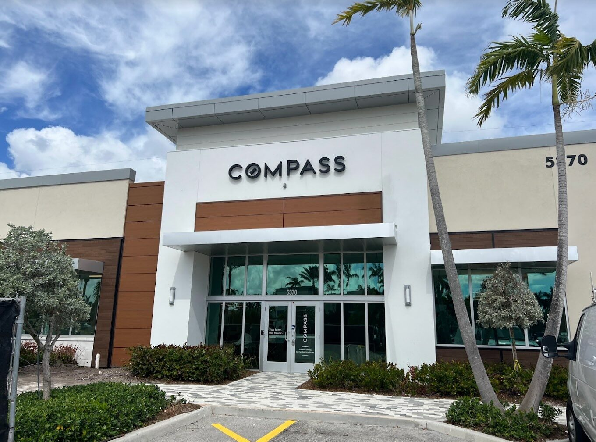
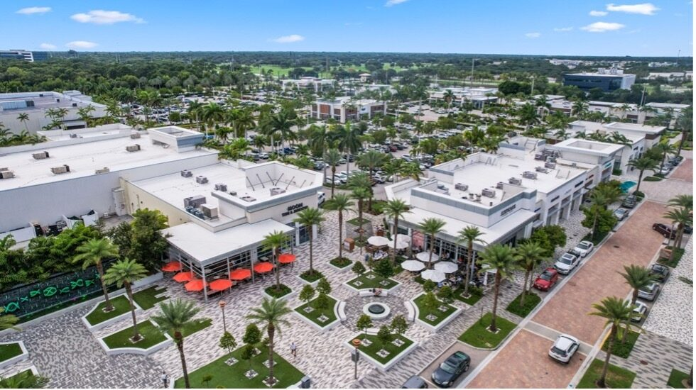
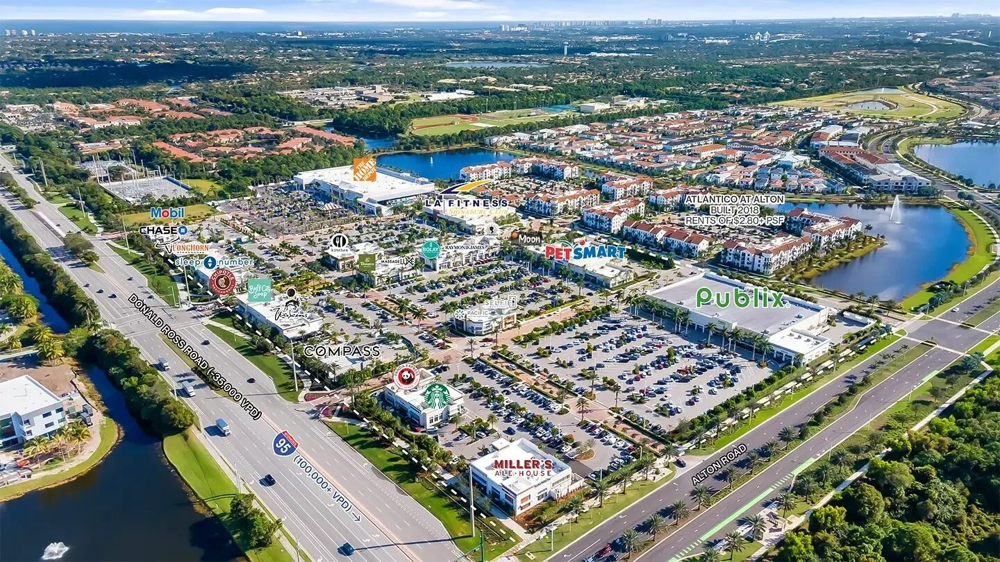

Commercial Office / Retail

Alton Town Center is one of Palm Beach County's high-end mixed-use retail destinations - anchored by Publix, LA Fitness, PetSmart, Home Depot, Starbucks, and dozens of national and local tenants along Donald Ross Road in Palm Beach Gardens. Compass, the NYSE-listed real estate brokerage, chose Alton for their Palm Beach Gardens office - and when a company at that level picks a location, the buildout has to match.
The Compass space at 5370 Donald Ross Road features a modern commercial facade - full-height storefront glazing with clean aluminum framing, wood-panel accent cladding, and the signature Compass branding above a two-story glass entrance. The glass is the first thing agents and clients see when they pull into the parking lot. It communicates exactly what Compass wants: precision, transparency, professionalism.
ACG furnished and installed the complete storefront glazing package for the Compass office - Trulite storefront throughout. The scope included the full-height entrance storefront, all perimeter glass, entrance doors, and all associated framing.
Alton Town Center sits in Palm Beach County - which means every piece of glass meets Florida's impact and wind load requirements. The storefront system had to perform structurally while maintaining the clean, minimal aesthetic that a brand like Compass demands.
Built for Sisca Construction - a South Florida general contractor with a strong retail and commercial buildout portfolio. ACG and Sisca have built together on multiple projects, including the Shoppes at Westlake Point. When Sisca calls, they know the scope will be handled: clean submittals, on-time delivery, and punch lists that close.



ACG furnished and installed Trulite storefront at Compass at Alton Town Center - the entrance storefront, perimeter glass, entrance doors, and associated framing.
The scope was sequenced to SISCA's field schedule, with weekly coordination meetings, RFI turn-around inside 24 hours, and submittals tracked against the construction critical path. ACG's three-office Florida footprint (West Palm Beach HQ, Naples, Tampa) keeps a project supervisor within driving distance of every active job site, and the Boca Raton location pulled supervision out of our West Palm Beach office.
Why this matters for the Boca Raton market. Compass at Alton Town Center is not just another envelope. Alton Town Center mixed-use community. Subcontractors who deliver here build a body of evidence GCs and developers can verify - first-pass inspection clearance, on-time turnover, accurate submittals, no callback claims. Those four metrics are how a glazing sub gets called back, and they are the entire reason ACG was selected for this scope.
For developers and GCs evaluating subcontractors for similar work in Boca Raton or surrounding Palm Beach County, Compass at Alton Town Center is on our portfolio precisely because it represents the standard of execution we hold across every project, regardless of size.
Retail centers, office buildouts, national tenants - ACG delivers complete commercial storefront packages across Florida. Try our Scope Engine or send your plans for a 48-hour turnaround.
Send Us Plans